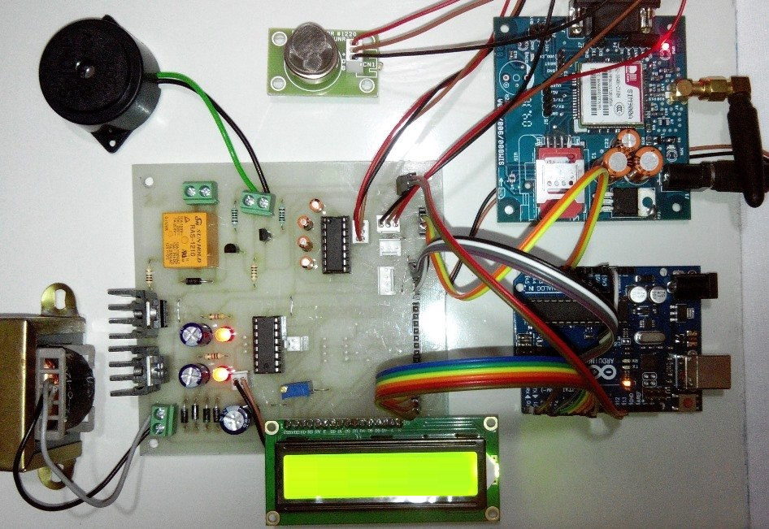

Projects
IOT Based Gas Leakage Detector using Arduino
I developed an IoT Gas Leakage Detector using Arduino, sensors, and Wi-Fi module. It detects gas leaks in real-time, triggering alarms and sending alerts via mobile app or web server. Demonstrating proficiency in Arduino programming, sensor interfacing, and IoT application development for real-world safety solutions.
IOT Smart Parking using RFID
IoT Smart Parking with RFID employs radio frequency identification technology to streamline parking management.It enables real-time monitoring of parking spaces, automates payment processes, and enhances user experience by providing efficient parking solutions.